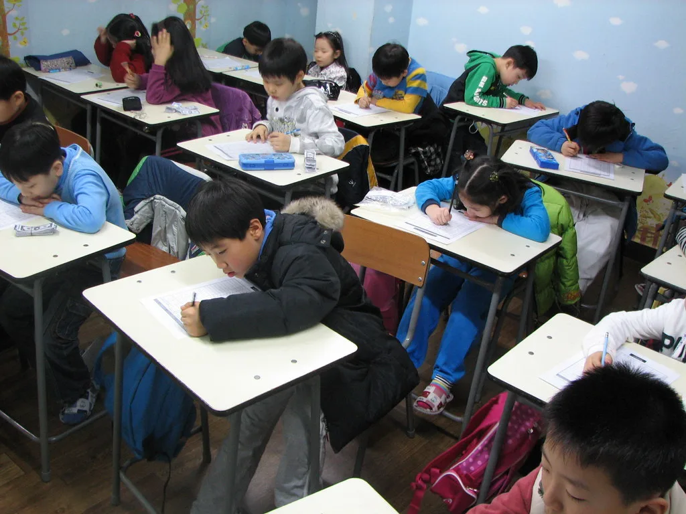
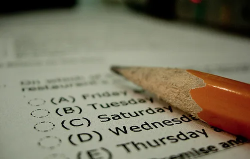

2027학년도 대학수학능력시험이 19일 오전 8시 40분 1교시 국어 영역을 시작으로 전국 시험장에서 일제히 치러졌다. 올해 응시원서를 낸 수험생은 55만여 명으로, 졸업생 등 이른바 N수생 비중이 20여 년 만에 가장 높은 수준을 기록한 가운데 시험이 진행됐다. 시험은 수학, 영어, 한국사·탐구, 제2외국어·한문 순으로 이어져 오후 늦게 모든 일정이 마무리된다.
시험 시작과 함께 출제본부는 올해 문항의 출제 방향을 공개했다. 출제위원장을 맡은 오기영 한경국립대 교수는 브리핑에서 고교 교육과정의 핵심 내용을 중심으로 적정 난이도의 문항을 고르게 출제해 공교육만으로도 변별력을 확보할 수 있도록 했다고 설명했다. 특히 사교육에서 반복 훈련한 풀이 기술에 유리한 이른바 킬러문항은 철저히 배제했다는 점을 강조했다. 출제 과정에서 시중 문제집을 검토해 유사 문항을 걸러냈다는 설명도 나왔다.

난이도 조정의 근거로는 두 차례 모의평가 결과가 제시됐다. 출제본부는 비교적 어려웠던 6월 모의평가와 상대적으로 쉬웠던 9월 모의평가의 응시 결과를 함께 분석해 이번 시험의 난이도를 미세하게 조정했다고 밝혔다. 응시생 중 졸업생 비중이 높아진 점, 사회탐구로 쏠리는 이른바 사탐런 현상 등 수험생 구성의 변화도 선택과목 간 난이도 균형을 맞추는 과정에서 고려됐다고 덧붙였다.
관심이 컸던 영어 영역에 대해서는 1등급 비율이 안정적으로 나올 것으로 예상한다는 입장이 나왔다. 지난해 수능 영어는 1등급 비율이 예상보다 낮아 어렵게 출제됐다는 평가를 받았는데, 올해는 이를 감안해 난이도를 조절했다는 것이다. 영어와 한국사, 제2외국어·한문은 원점수가 아닌 등급만 표기하는 절대평가로 치러진다. 한국교육과정평가원장도 교육과정을 충실히 이수한 학생이라면 충분히 해결할 수 있는 수준으로 출제했다고 밝혔다.

EBS 교재와의 연계율은 문항 수 기준으로 50% 수준이 유지됐다. 영역별로는 영어가 55.6%, 국어가 53.3%, 수학이 50.0%로 발표됐다. 연계 방식은 개념이나 원리를 활용하거나 지문의 소재를 바꾸는 등 간접 연계가 중심인 만큼, 연계율 수치만으로 체감 난이도를 판단하기는 어렵다는 것이 입시업계의 대체적인 시각이다. 실제 난이도 평가는 시험이 끝난 뒤 가채점 결과가 모여야 윤곽이 드러날 전망이다.
올해 시험은 부정행위 대응이 유독 강화된 가운데 치러졌다. 최근 국가자격시험에서 인공지능을 활용한 부정행위가 드러나면서 수험생 사이에 공정성 우려가 커졌고, 정부는 휴대전화와 스마트워치는 물론 스마트안경 같은 기기를 착용하거나 소지만 해도 시험을 무효로 처리하겠다는 방침을 밝혔다. 적발 시 다음 해 응시 자격 제한과 형사 고발까지 검토하겠다는 입장도 내놓았다. 일부에서 시험 연기 요구가 나오기도 했지만 교육당국은 예정대로 시행을 결정했다.
수능이 끝나면 입시는 곧바로 다음 단계로 넘어간다. 수험생들은 가채점 결과를 바탕으로 수시 대학별 고사 응시 여부와 정시 지원 전략을 정하게 되며, 문제와 정답에 대한 이의신청 절차도 진행된다. 성적표는 다음 달 11일 통지될 예정이다. 현행 수능 체제로 치러지는 사실상 마지막 시험이라는 점에서, 올해 결과가 향후 입시 제도 논의에 어떤 영향을 줄지도 주목된다.